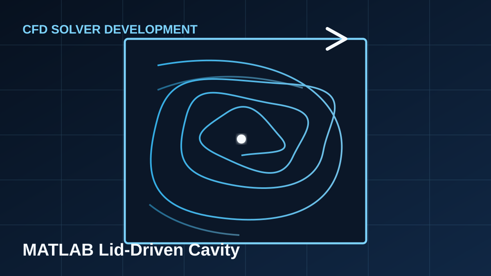

CFD Solver Development
MATLAB Lid-Driven Cavity Solver
A two-dimensional incompressible-flow benchmark implemented with the SIMPLE algorithm and a staggered-grid finite-volume formulation.

Tools
MATLAB, Git, numerical visualization
Methods
SIMPLE, finite volume method, staggered grid
Outputs
Residuals, contours, streamlines, centerline profiles
Project overview
The project solves the incompressible Navier–Stokes equations for flow inside a square cavity driven by a moving top wall. It was developed as a transparent CFD benchmark for studying pressure–velocity coupling, discretization, convergence behavior, and code organization.
Implementation
- Staggered arrangement for pressure and velocity variables.
- Predictor–corrector procedure using the SIMPLE pressure-correction method.
- Iterative and vectorized MATLAB implementations for comparison.
- Residual histories and stability monitoring during the solution process.
- Post-processing for velocity magnitude, pressure, vorticity, streamlines, and centerline profiles.
Validation and learning outcomes
Centerline velocity profiles and flow structures can be compared with published cavity-flow benchmark data. The project also provides a practical basis for evaluating numerical stability, mesh resolution, and computational performance across different Reynolds numbers.